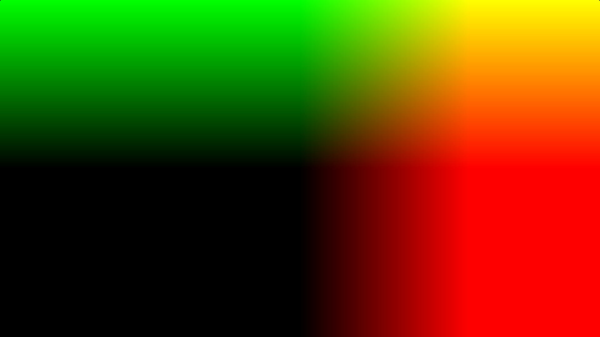

Mapa "UV" y su manejo
Primero modificaremos UV para que se “mueva” hacia el centro comenzando en (-1,-1) y terminando en (1,1) para eso tomamos f(x,y) = (Coord.xy / ( Resolución.xy * 2.0))- 1.0 de esa manera tomemos una coordenada (1980/2,1080/2) en el medio e ingresémosla obteniendo f(1980/2,1080/2)= (1980/2,1080/2) /(1980,1080)*2.0 podemos simplificar a (1980,1080)/(1980,1080)- 1.0 de esa manera la salida es el valor (0.0,0.0)
Esta parte se puede omitir pero haremos que la uv sea un cuadrado para que la diagonal dé un módulo de 1 (la uv = cuadrado) para ello multiplicamos la coordenada UV.x x que es la más grande por la relación entre las Relación Resolución.x/Resolución.y de esa manera obtenemos cuadrado
Matemáticas y razonamiento
Bien, para este protector de pantalla vamos a hacer algunas bolas que parecen permanecer flotando alrededor de un punto fijo. Para ello determinaremos la posición de un círculo como un vector que avanza a través del tiempo en una onda senoidal de esa manera obtenemos el función f(x,y) = cos(iTime)*x + sin(iTime) * y ahora tenemos sus posiciones pero para dibujarlas necesitamos un radio y para hacerlo un poco más dinámico lo haremos dependiente del tiempo r (x) = (0,1 + sin(iTiempo * 0,7) * 0,1 )* x; ahora para hacerlos más coloridos cambiaremos r,g,b con esta función (probando diferentes constantes y cambiándolas se obtienen diferentes patrones de color)
Ahora, para tener más de 1 bola, tendremos una variable i que recorre estos canales a través de x cantidad de bolas y aumenta 1 en cada una y para hacer que las bolas sean diferentes en color y radio, etc., pondremos la variable i en la función, como por ejemplo
Eso sería todo… ahora traduciéndolo a código glsl nos dará estas funciones
void mainImage(out vec4 O, vec2 F) {
vec2 u = F / iResolution.xy * 2.0 - 1.0;
u.x *= iResolution.x / iResolution.y;
O = vec4(0.0);
for (int i = 0; i < 20; i++) {
vec2 pos = vec2(cos(iTime * 0.5 + float(i) * 0.3) * 0.5, sin(iTime * 0.3 + float(i) * 0.7) *
0.5);
float radius = 0.1 + sin(iTime * 0.7 + float(i) * 0.4) * 0.1;
vec3 color = vec3(sin(float(i) * 0.2 + iTime * 0.5) * 0.5 + 0.5,
sin(float(i) * 0.3 + iTime * 0.6) * 0.5 + 0.5,
sin(float(i) * 0.4 + iTime * 0.7) * 0.5 + 0.5);
float dist = length(u - pos);
O += vec4(color, 1.0) * smoothstep(radius, radius * 0.9, dist);
}
}